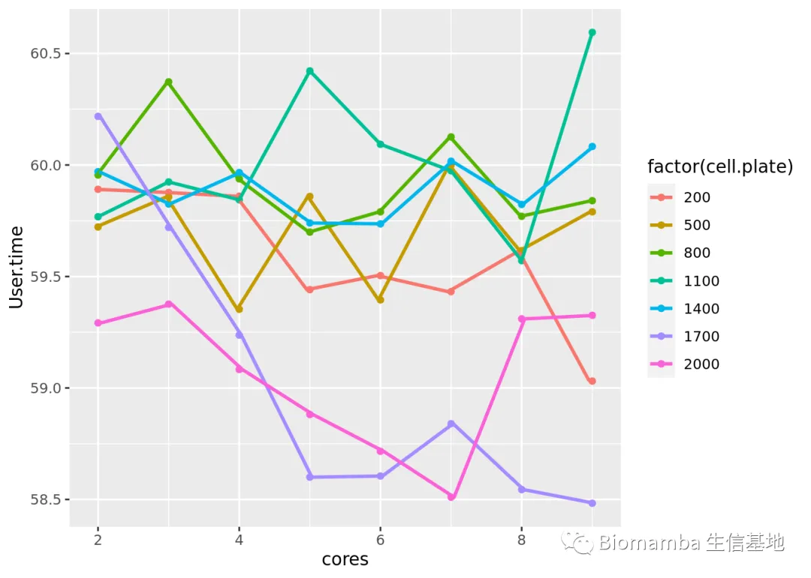
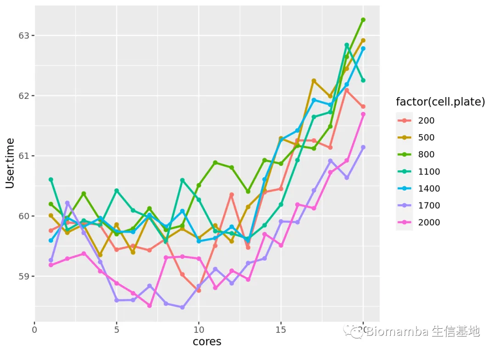
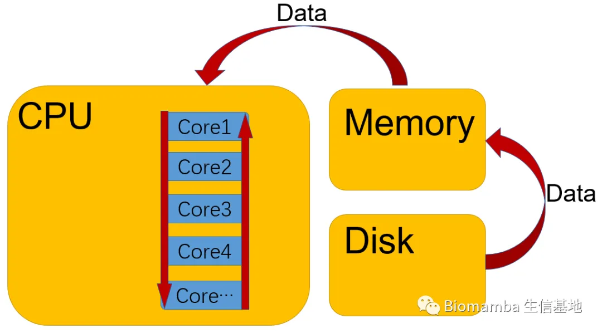

答读者问 （十七）调用的线程越多就算的越快嘛?
原文：https://mp.weixin.qq.com/s?__biz=MzAwMzIzOTk5OQ==&mid=2247488995&idx=1&sn=7140e0d037671542fb37dff3a3c94b28&chksm=9b3f6cb3ac48e5a5f54a02be9e6af9f5a4cf8da1de1770f9035130c84dedf059a024964fc15a#rd 合集：单细胞教程全收录 / 答读者问
往期回顾
答读者问 （五）如何实现各物种基因的ID/symbol的转换
答读者问 （十一）如何一次性读取一个目录下的cellranger输出文件？
答读者问 （十二）ERROR: have no zero exit status 答读者问 （十三）查看Seurat对象时的ERROR：type='text'
答读者问 （十五）稀疏矩阵转matrix, as.matrix函数是下下策
问题
有些同学在使用服务器的时候(独享服务器2.0即将上线，128GB免费试用)发现自己使用服务器的时候计算速度甚至还不如本地的电脑。在沟通的过程中我们发现，有一部分同学不太会在自己运行任务时调用多线程并行计算来加速自己的计算(48线程的机器只用1个线程当然很亏啦)，但是另一部分同学虽然调用了较高的线程数，执行任务时仍需花费大量的时间。那么问题就来了：调用的线程越多就算的越快嘛?
答案
恰好上次在制作monocle2教程时用到了一个多线程函数，发现用10 个线程时要比用5 个或20 个线程耗时都短，所以标题中问题的答案当然是否定的，那我们具体来探索一番，计算时间究竟跟线程有什么关系。这里我正好在制作monocle3的教程，就以monocle3为例，先运行到可以调用多线程的地方：
suppressMessages({library(monocle3)library(Seurat)library(SeuratObject)library(tidyselect)library(dplyr)})
expression_matrix <- readRDS('author.pro/expression_matrix.rds')
cell_metadata <- readRDS('author.pro/cell_metadata.rds')
gene_annotation <- readRDS('author.pro/gene_annotation.rds')
cds <- new_cell_data_set(expression_matrix,
cell_metadata = cell_metadata,
gene_metadata = gene_annotation)
cds <- preprocess_cds(cds, num_dim = 100)#抽平、预处理，这一步默认调用最大线程
cds <- align_cds(cds, alignment_group = "plate")#去除批次效应，看起来要比Seurat中方便的多## Aligning cells from different batches using Batchelor. ## Please remember to cite:## Haghverdi L, Lun ATL, Morgan MD, Marioni JC (2018). 'Batch effects in single-cell RNA-sequencing data are corrected by matching mutual nearest neighbors.' Nat. Biotechnol., 36(5), 421-427. doi: 10.1038/nbt.4091#取个子集加快一下速度
mysubset <- c()for(runplate in unique(cds@colData$plate)){
mytemp<- cds@colData %>% as.data.frame() %>% filter(plate==runplate) %>% rownames() %>% sample(200)
mysubset <- cbind(mysubset,mytemp)
}
cds.sub <- cds[,mysubset]
先简单的看一下花费的时间
system.time({cds.sub <- reduce_dimension(cds,cores=1)})
## user system elapsed
## 60.016 4.144 58.971
system.time({cds.sub <- reduce_dimension(cds,cores=2)})
## user system elapsed
## 59.789 3.552 59.222
第一列的user是我作为用户实际等候 的时间，system代表调用这些线程花费了多少时间，elapsed是CPU实际的表达式占据CPU的时间，看起来两个线程确实要比一个缩短了点时间 具体描述可以参考：https://en.wikipedia.org/wiki/Time_(Unix)#User_Time_vs_System_Time那我们来稍微统计一下
mytime <- data.frame()for (mycore in c(1:20)) {
mytime <- rbind(
mytime,
cbind(system.time({cds.sub <- reduce_dimension(cds,cores=mycore)})[1],mycore)
)
}
head(mytime)## V1 mycore## user.self 59.440 1## user.self1 59.751 2## user.self2 60.451 3## user.self3 59.648 4## user.self4 60.393 5## user.self5 59.672 6
看起来在这个细胞数量过少。这里反映的情况并不是很明显，我们来重新写个循环，把1:20中的每个 线程数以及数据集大小 的因素考虑进去。并且在这个过程中，为了避免其他因素的干扰，本测试是在夜间、后台没有挂载任何用户程序的情况下进行测试，并且这是一台我独享的48线程、384GB的服务器，理论上除了我们控制的变量，没有其他任何因素的干扰(突出一个严谨)。
mytime <- data.frame()for(mycell in seq(200,2000,300)){
mysubset <- c() for(runplate in unique(cds@colData$plate)){
mytemp<- cds@colData %>% as.data.frame() %>% filter(plate==runplate) %>% rownames() %>% sample(mycell)
mysubset <- cbind(mysubset,mytemp)
} #mysubset <- sample(1:20271,2000)
cds.sub <- cds[,mysubset]
for (mycore in c(1:20)) {
mytime <- rbind(
mytime,
cbind(system.time({cds.sub <- reduce_dimension(cds,cores=mycore)})[1],mycore,mycell)
)
}
}
colnames(mytime) <- c('User.time','cores','cell.plate')
mytime[1:4,1:3]#初步得到统计的数据## User.time cores cell.plate## user.self 59.757 1 200## user.self1 59.891 2 200## user.self2 59.877 3 200## user.self3 59.860 4 200
那我们可视化来看一下：
suppressMessages(library(ggplot2))
ggplot(mytime,aes(cores,User.time,group=cell.plate,color=factor(cell.plate)))+
geom_point()+
geom_line(position = position_dodge(0.1),cex=1)
那我们先来看1:10核的运算趋势如何，可以看出这一区段随着线程数的上升计算时间基本处于下降的趋势，尤其是任务量大时(如1700/cell.plate和2000/cell.plate)。但是有些任务量相对较少的曲线在线程数上升时计算时间却反而上升了。
suppressMessages(library(ggplot2))
ggplot(filter(mytime,1<cores&cores<10),aes(cores,User.time,group=cell.plate,color=factor(cell.plate)))+
geom_point()+
geom_line(position = position_dodge(0.1),cex=1)

我们再从全局的角度看一看，可以观察到大约在1:10核区间随着线程数的上升计算时间略有下降，很多任务的耗时都降到了60s以下，但是此后10:20核区间内随着线程数的上升、花费的时间却不断上升。

奇怪的现象我们是观察到了，但是其中的玄机又如何解释呢？那我们可以先来了解一下计算机执行计算任务的过程，为了帮助大家理解这个过程，我画了一张下面的流程图：首先，我们要知道任务的执行实质上就是一个数据传递和转换的过程，一个命令在运行时需要从磁盘(Disk)中把数据读取出来放在内存中，之后CPU再从内存中将数据取出交给内部的各个"核"去处理，处理完之后产生的结果可以再原路返回写回磁盘中。那么我们调用CPU的多个线程/核处理数据(串行或并行计算)。串行 简单来说就是将数据/任务在各个核之间进行传递，用多个核执行一个任务的不同环节从而达到提速的目的，并行 简单来说就是把一个任务拆分成不同的子任务交给不同的核去计算。需要注意的是，无论是串行中的核之间传递数据还是并行中的拆分任务都是需要消耗时间的！再简单来说，调用多线程也是要付出时间代价的。所以这就是为什么我们在上面的案例中1:10线程展现出了多核计算的优势降低了任务执行时间，但是后面随着线程数的增加，时间又"离奇 "的上升了。

回到我们的问题，答案当然是否定的，多线程的计算当然要比单线程整体计算能力要强，但调用的线程越多并不直接等同于着计算时间的降低，我们上面的案例也证明了多线程计算对于大数据来说更加的具有优势。但是对于小型数据(其实我们这个数据整体也是一个小数据)来说调用多线程的代价甚至要大于带来的收益，大家需要针对自己的数据特征选择合适的线程数，否则可能会南辕北辙、白白浪费计算资源。
如何联系我们
 公众号后台中消息更新不及时，超过48h后便不允许回复读者消息，这里给大家留一下领取资料、咨询服务器的微信号 ，方便大家随时交流、提建议（由助理接待）。此外呼声一直很高的交流群也建好了，欢迎大家入群讨论：你们要的微信、交流群，来了！
大家可以阅读完这几篇之后添加笑一笑也就算了如何搜索公众号过往发布内容
公众号后台中消息更新不及时，超过48h后便不允许回复读者消息，这里给大家留一下领取资料、咨询服务器的微信号 ，方便大家随时交流、提建议（由助理接待）。此外呼声一直很高的交流群也建好了，欢迎大家入群讨论：你们要的微信、交流群，来了！
大家可以阅读完这几篇之后添加笑一笑也就算了如何搜索公众号过往发布内容